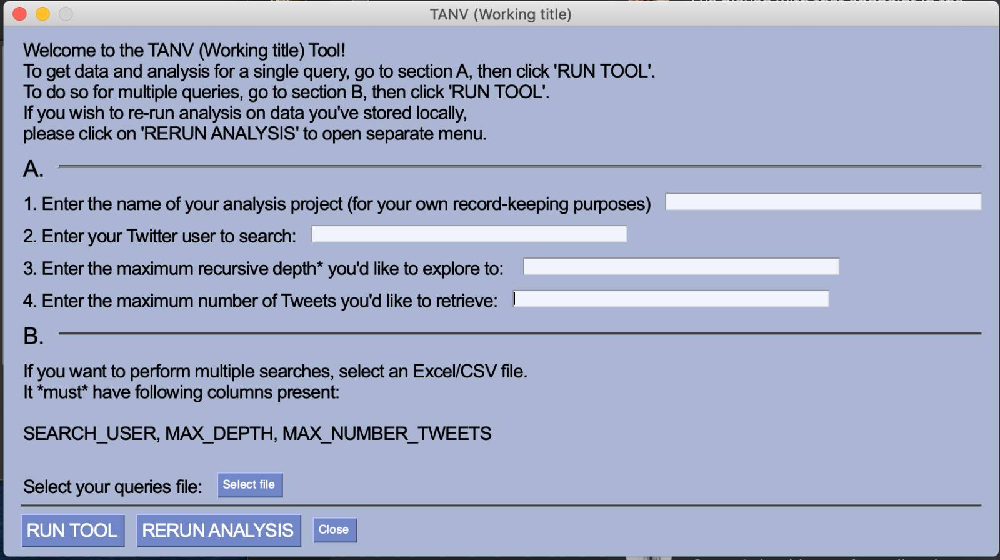
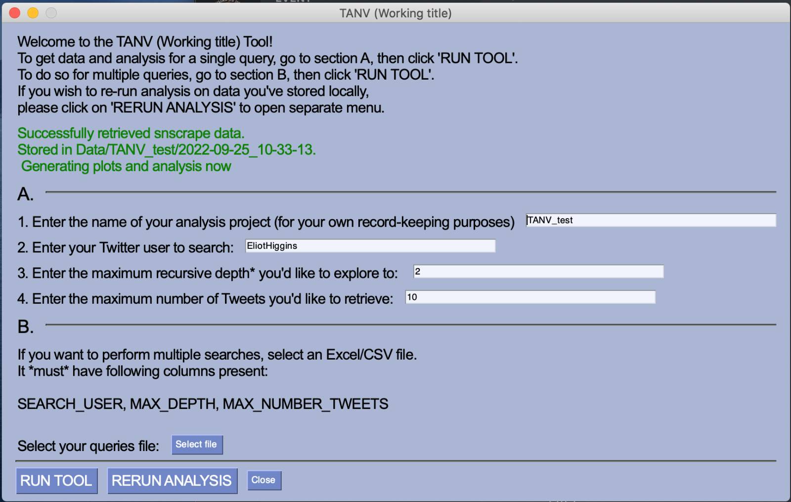
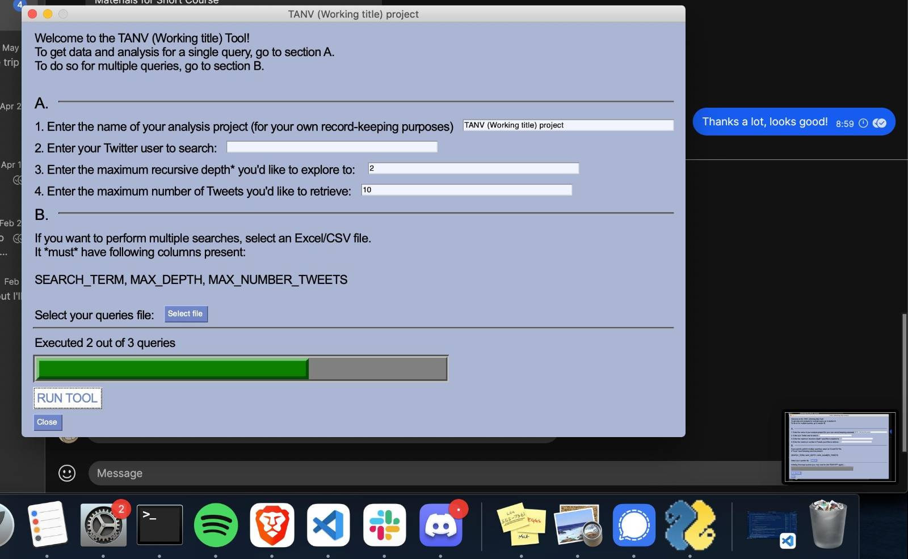
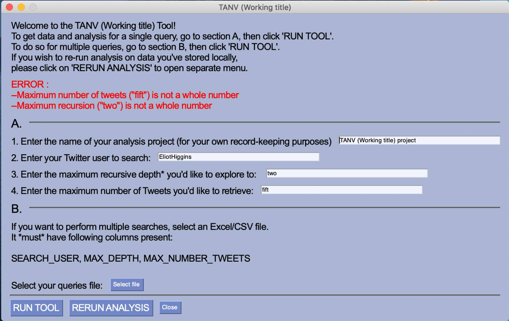
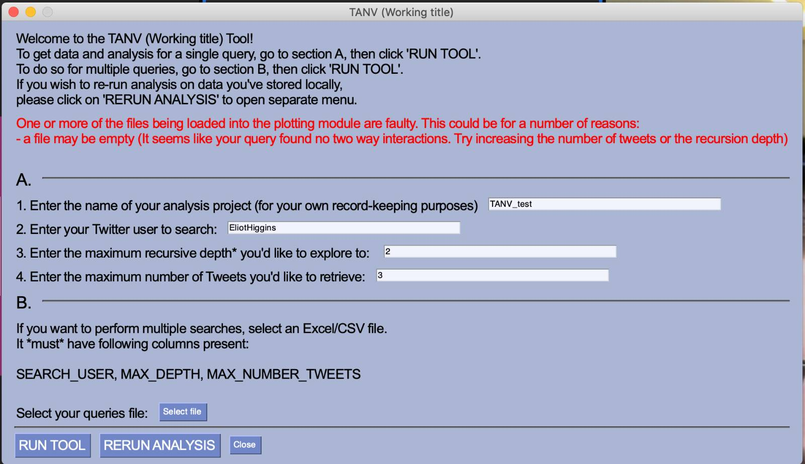
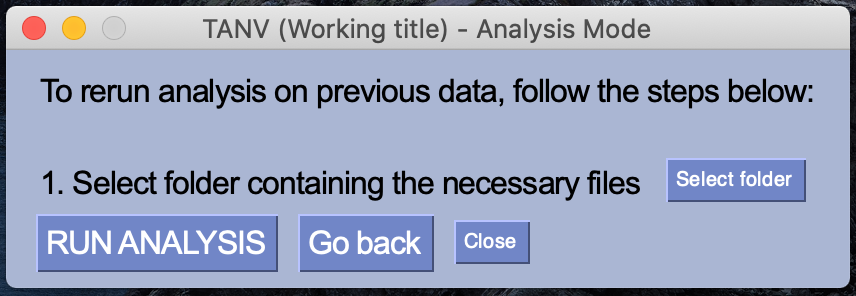
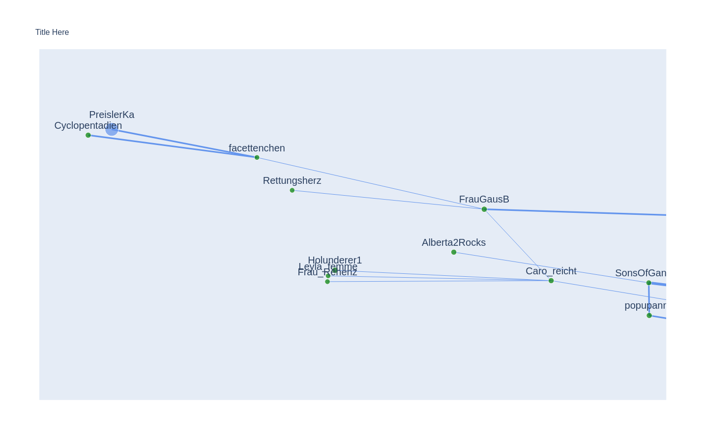

The tool works with a general user interface, which can be downloaded as a .exe file from the corresponding Github repository. When opening the GUI, the user is presented with the options to name the project, enter a twitter user whose network they would like to visualize and analyze, a maximum recursive depth for downloading the tweets, and a number of tweets they would like to download. The GUI also contains an option to enter multiple queries (i.e. analyzing and visualizing multiple users' networks). In part B of the GUI, a excel or .csv file can be uploaded containing the columns with the information required for part A. With this method, singular use of the tool can yield data on any number of users (see the GUI below).

In case of valid search parameters, the tool automatically executes the scripts for data retrieval, analysis and visualization and displays a success message.

When multiple queries are entered, the tool displays a progress bar, based on the number of queries that has already been executed.

If inputs in the GUI are misspecified (e.g. no whole numbers for recursive search depth and number of tweets), an error message is displayed, stating the required format of inputs. The same principle applies when faulty files are loaded into the GUI


The tool automatically saves the full queries into a .csv file on the user's machine. This enables easily re-running previous analysis in case of error or other reasons. To re-run analyses, the file with the previous folders can be uploaded into a prompt of the GUI (see below)

The first output of the tool is the network plot. It is an interactive plotly graph, displaying the nodes and their connections. The node size varies based on the number of followers of the respective users. The edge size varies based on the frequency of interaction between the users. The nodes are also color coded, where blue nodes mean verified members and grey nodes mean unverified members. When hovering over the nodes, information on the username of the corresponding node, their verified status and their follower count is displayed.

Both the node size and the edge size were scaled as massive differences in follower count and interaction frequency are not uncommon and unscaled data overrepresented accounts with more followers or more interactions to the point that the network became unintelligeble.
An interactive version of the network plot can be found here.